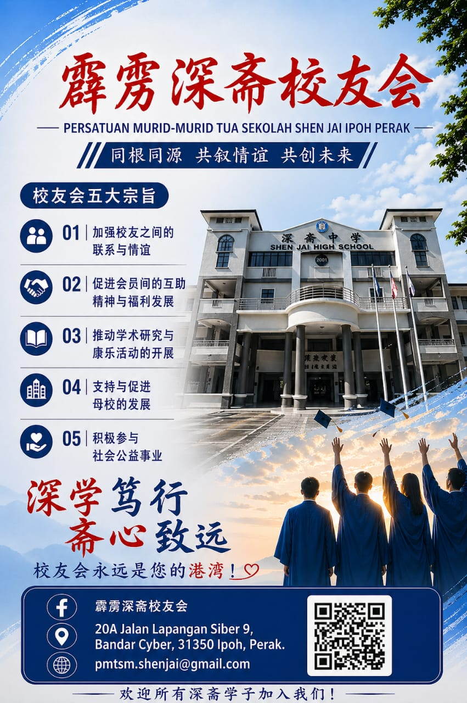

<style>
  .entry-header { padding: 2.5rem 0 2rem; border-bottom: 1px solid var(--rule); }
  .entry-meta-top { display: flex; align-items: center; gap: 0.6rem; margin-bottom: 1rem; flex-wrap: wrap; }
  .entry-tag { font-family: var(--mono); font-size: 0.6rem; font-weight: 500; letter-spacing: 0.1em; padding: 1px 6px; border-radius: 2px; display: inline-block; background: var(--tag-service-bg); color: var(--tag-service); }
  .entry-org { font-family: var(--mono); font-size: 0.65rem; color: var(--ink-muted); }
  .entry-org a { color: var(--accent); text-decoration: none; }
  .entry-org a:hover { text-decoration: underline; }
  .entry-title { font-family: var(--serif-cn); font-size: 1.5rem; font-weight: 400; color: var(--ink); line-height: 1.35; margin-bottom: 1.25rem; }

  .entry-image { width: 100%; max-width: 600px; display: block; margin: 0 auto 2rem; border-radius: 4px; }

  .entry-body { font-family: var(--serif-cn); font-size: 0.92rem; font-weight: 300; color: var(--ink-secondary); line-height: 2; }
  .entry-body p { margin-bottom: 1.25rem; }
  .entry-body h2 { font-family: var(--serif-cn); font-size: 1rem; font-weight: 400; color: var(--ink); margin: 2rem 0 0.75rem; }

  .entry-contact { margin: 2rem 0; padding: 1.25rem; background: var(--paper-mid); border-radius: 4px; }
  .entry-contact-title { font-family: var(--mono); font-size: 0.62rem; font-weight: 500; letter-spacing: 0.12em; color: var(--ink-muted); text-transform: uppercase; margin-bottom: 0.75rem; }
  .entry-contact-item { font-family: var(--mono); font-size: 0.72rem; color: var(--ink-secondary); line-height: 2; }
  .entry-contact-item a { color: var(--accent); text-decoration: none; }
  .entry-contact-item a:hover { text-decoration: underline; }
  .entry-meta {margin-top: 10px; font-size: 13px; color: #777;}
  .entry-meta-title {font-weight: 600; margin-bottom: 6px;}
  .entry-meta-item {margin: 2px 0;}
  .source-note { font-family: var(--mono); font-size: 0.6rem; color: var(--ink-muted); letter-spacing: 0.04em; margin-top: 1.5rem; }

  .entry-nav { padding: 1.5rem 0; display: flex; align-items: baseline; gap: 0.75rem; border-top: 1px solid var(--paper-mid); }
  .nav-link { font-family: var(--mono); font-size: 0.65rem; color: var(--ink-secondary); text-decoration: none; transition: color 0.15s; }
  .nav-link:hover { color: var(--accent); }
  .nav-sep { color: var(--rule); font-size: 0.75rem; }

  footer { padding: 2rem 0 3rem; display: flex; justify-content: space-between; align-items: center; }
</style>

<section class="entry-header">
  <div class="entry-meta-top">
    <span class="entry-tag">内容分享</span>
    <span class="entry-org"><a href="shenjai.html">霹雳深斋校友会</a></span>
  </div>
  <h1 class="entry-title">凝聚与传承：霹雳深斋校友会的角色</h1>
</section>

<article>
  

  <div class="entry-body">

    <p>霹雳深斋校友会，是由怡保深斋中学校友组成的组织，会所设于霹雳怡保。</p>

    <p>校友会成立于1976年5月9日，母校深斋中学是怡保一所历史悠久的华文独立中学。几十年来，校友会肩负着联系散落各地的深斋学子、凝聚同根同源之情的使命，从未间断。</p>

    <p>校友会五大宗旨，是这个组织存在的核心：加强校友之间的联系与情谊，促进会员间的互助精神与福利发展，推动学术研究与康乐活动的开展，支持与促进母校的发展，积极参与社会公益事业。简单说，既向内凝聚校友，也向外回馈社会。</p>

    <p>2025年，校友会迎来第45届理事会就职，组织迈入新的发展阶段。同年底举办49周年庆晚宴，以「旭日高空，欢迎回家」为主题，获各界社团、华教同道及校友鼎力支持，圆满落幕。2026年，将迎来创会50周年金禧庆典。</p>

    <p>深学笃行，斋心致远。无论你是刚毕业的新生代，还是离校多年的老校友——校友会永远是您的港湾。</p>

  </div>

  <div class="entry-contact">
    <p class="entry-contact-title">联络方式</p>
    <p class="entry-contact-item">WhatsApp：<a href="https://wa.me/60125907610">012-590 7610</a></p>
    <p class="entry-contact-item">Email：<a href="mailto:pmtsm.shenjai@gmail.com">pmtsm.shenjai@gmail.com</a></p>
    <p class="entry-contact-item">Facebook：<a href="https://www.facebook.com/pmts.shenjai" target="_blank">霹雳深斋校友会</a></p>
  </div>

<div class="entry-meta">
  <p class="entry-meta-title">内容说明（待确认）</p>
  <p class="entry-meta-item">内容提供：</p>
  <p class="entry-meta-item">内容整理：</p>
  <p class="entry-meta-item">资料来源：</p>
</div>
  
  <p class="source-note">以上信息经资讯方确认，如有更新，欢迎联络告知。</p>
</article>

<nav class="entry-nav">
  <a class="nav-link" href="index.html">Index 50 首页</a>
  <span class="nav-sep">·</span>
  <a class="nav-link" href="shenjai.html">← 返回霹雳深斋校友会</a>
</nav>

<footer>
  <span class="footer-mark">INDEX 50 · v1</span>
  <a class="footer-back" href="index.html">← 返回首页</a>
</footer>
